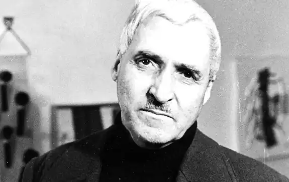
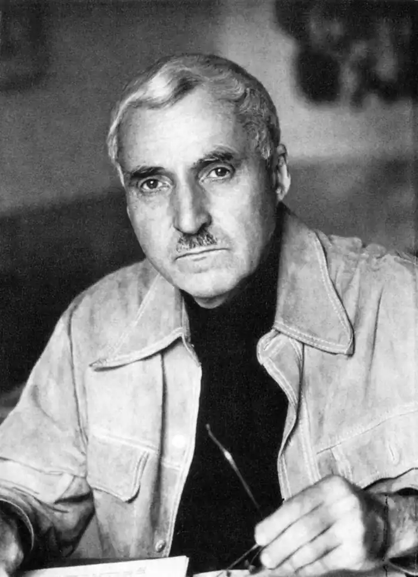
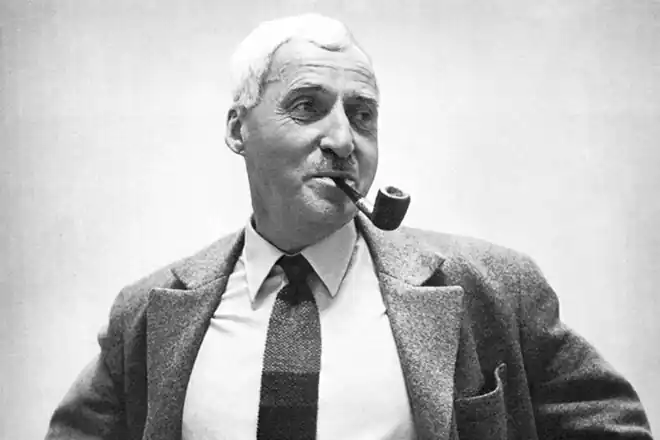

Костянтин Михайлович Симонов (Кирило Михайлович Симонов)(1915 — 1979) – відомий радянський письменник, громадський діяч, військовий кореспондент, лауреат Ленінської і Сталінської премій, Герой Соціалістичної Праці.
Ранні роки
Народився Костянтин 15 (28) листопада 1915 року в Петрограді. Але перші роки життя Він прожив в Саратові, Рязані. Батьками був названий Кирилом, але потім змінив своє ім'я і взяв псевдонім – Костянтин Симонов. Виховувався вітчимом, який був військовим фахівцем і викладав у військових училищах. Навчання Якщо розглядати коротку біографію Симонова, важливо зазначити, що після закінчення семи років школи письменник навчався спеціальності токаря. Потім у житті Костянтина Симонова в 1931 році відбувся переїзд до Москви, після чого він працював на заводі до 1935 року. Приблизно в той же час були написані перші вірші Симонова, а надрукували його твори вперше в 1936 році. Після отримання вищої освіти в Літературному інституті імені Горького (1938) і закінчення аспірантури, вирушив на фронт у Монголію. Творчість і військова кар'єра У 1940 році була написана перша п'єса Симонова "Історія одного кохання", а в 1941 році — друга – "Хлопець з нашого міста". Навчався Костянтин Симонов на курсах військових кореспондентів, потім, з початком війни, писав для газет "Бойове знамено", "Червона зірка". За все життя Костянтин Михайлович Симонов отримав кілька військових звань, найвищим з яких стало звання полковника, присвоєне письменникові вже після закінчення війни. Одними з відомих військових творів Симонова стали: "Чекай мене", "Війна", "Російські люди". Після війни в біографії Костянтина Симонова настав період відряджень: він їздив в США, Японію, Китай, два роки жив у Ташкенті. Працював головним редактором "Літературної газети", журналу "Новий світ", входив до складу Союзу письменників. По багатьом творам Симонова були зняті фільми. Смерть і спадщина Помер письменник 28 серпня 1979 року в Москві, а прах його був розвіяний, згідно із заповітом, над Буйничским полем (Білорусія). Його ім'ям названі вулиці в Москві і Могильові, Волгограді, Казані, Кривому Розі та Краснодарському краї. Також у його честь названа бібліотека в Москві, встановлено меморіальні дошки в Рязані і Москві, названі його ім'ям теплохід і астероїд.